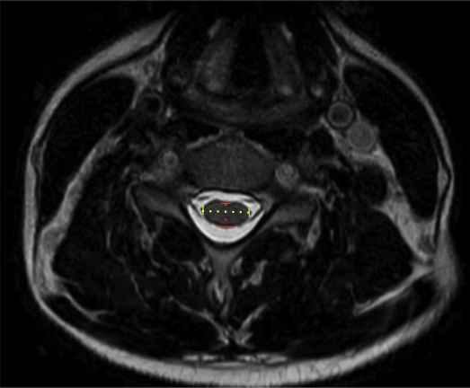

Adapted from: https://www.mriclinicalcasemap.philips.com/global/case/75/i
1) Description of Measurement
The compression ratio is a morphometric MRI parameter that quantifies the degree of cervical spinal cord deformation by comparing the anteroposterior (AP) diameter of the cord to its transverse (left–right) diameter on axial imaging.
This ratio reflects the shape distortion of the spinal cord rather than absolute size alone. A reduced compression ratio indicates flattening of the cord, which is commonly seen in degenerative cervical myelopathy, disc–osteophyte complexes, ossification of the posterior longitudinal ligament (OPLL), and chronic canal stenosis. The compression ratio correlates with neurologic deficit severity and functional outcomes, often complementing cord cross-sectional area (CSA) and canal measurements.
2) Instructions to Measure
3) Normal vs. Pathologic Ranges
Key points:
4) Important References
Takao T, Morishita Y, Okada S, et al. Clinical relationship between cervical spinal canal stenosis and traumatic cervical spinal cord injury without major fracture or dislocation. Eur Spine J. 2013 Oct;22(10):2228-31. doi: 10.1007/s00586-013-2865-7. Epub 2013 Jun 23.
Kitagawa T, Fujiwara A, Kobayashi N, et al. Morphologic changes in the cervical neural foramen due to flexion and extension: in vivo imaging study. Spine (Phila Pa 1976). 2004 Dec 15;29(24):2821-5. doi: 10.1097/01.brs.0000147741.11273.1c.
Fehlings MG. Current Knowledge in Degenerative Cervical Myelopathy. Neurosurg Clin N Am. 2018 Jan;29(1):xiii-xiv. doi: 10.1016/j.nec.2017.09.021. Epub 2017 Oct 23.
Jannelli G, Nouri A, Molliqaj G, et al. Degenerative Cervical Myelopathy: Review of Surgical Outcome Predictors and Need for Multimodal Approach. World Neurosurg. 2020 Aug;140:541-547. doi: 10.1016/j.wneu.2020.04.233. Epub 2020 May 8.
5) Other info....
The compression ratio is independent of patient size, making it useful across populations
Particularly valuable for:
Should be interpreted in conjunction with:
A low compression ratio without T2 hyperintensity may still represent chronic cord deformation
Static MRI does not assess dynamic compression; consider flexion-extension radiographs if instability is suspected